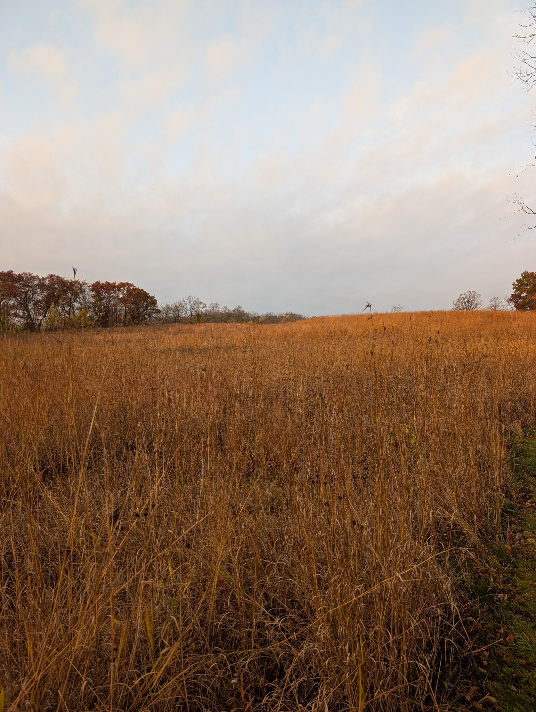
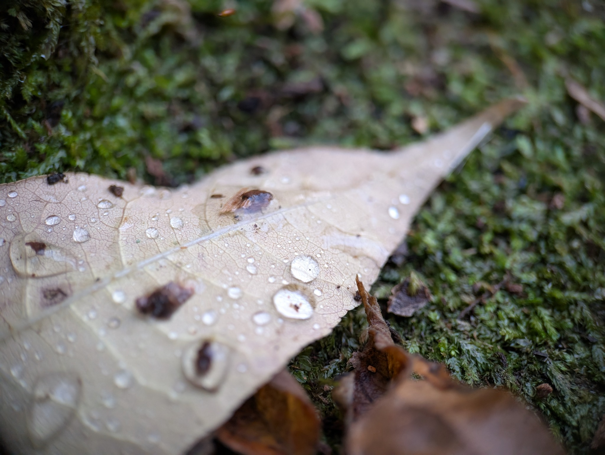
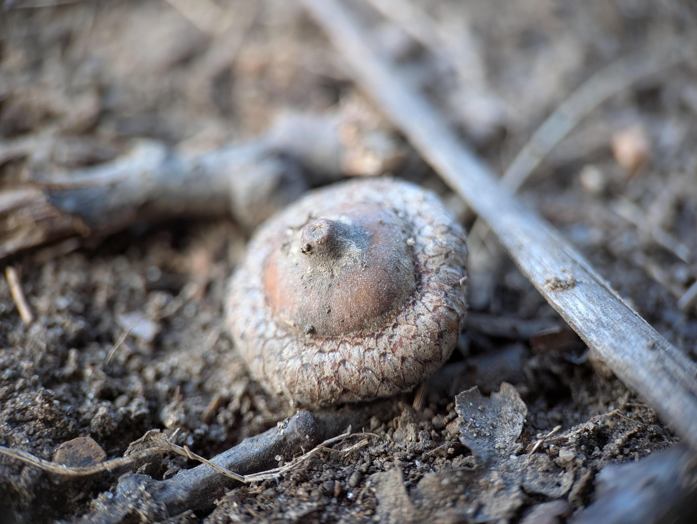

Notice the details
A living
record.
A space to share the places, plants, people, and small moments that make conservation tangible.
Photographs of Milwaukee-area natural spaces and the small details found within them.







Have a photograph to contribute? Contact the foundation and ask how to share it.